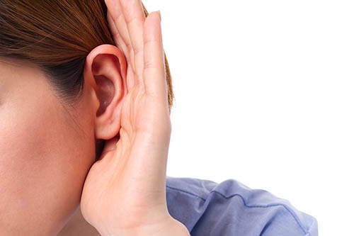
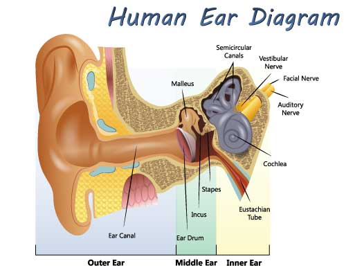
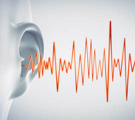

-
Conductive hearing loss
Conductive hearing loss is caused by anything that interferes with the transmission of sound from the outer to the inner ear. Below are some possible causes of conductive hearing loss:
- Middle ear infections (otitis media)
- Collection of fluid in the middle ear (“glue ear”)
- Blockage of the outer ear, most commonly by wax
- Otosclerosis, a condition in which the ossicles of the middle ear harden and become less mobile
- Damage to the ossicles, for example by serious infection or head injury
- Perforated (pierced) eardrum, which can be caused by an untreated ear infection, head injury or a blow to the ear, or from poking something in your ear
Conductive hearing loss means that sound isn't conducted adequately through your outer ear canal to the eardrum and the tiny bones, or ossicles, of your middle ear. Conductive hearing loss generally involves a reduction in sound level and results in the inability to hear faint sounds. However, you can still hear people speaking to you, but their speech may sound muffled, weak or far away.
Conductive hearing loss may occur in conjunction with sensorineural hearing loss or on its own. Most conductive hearing losses affect all frequencies of your hearing evenly and they don't usually result in severe hearing losses. A person with a conductive hearing loss is usually able to use a hearing aid or can have their hearing loss treated and corrected medically or surgically. -
Sensorineural hearing loss
Sensorineural hearing loss is due to damage to the pathway that sends impulses taken from the hair cells of the inner ear to the auditory nerve and the brain. Below are some possible causes:
- Age-related hearing loss (presbyacusis). This is the natural decline in hearing that many people experience as they get older. It’s partly due to the loss of hair cells in the cochlea
- Acoustic trauma (injury caused by loud noise) can damage hair cell
- Certain viral or bacterial infections such as mumps or meningitis can lead to loss of hair cells or other damage to the auditory nerve
- Meniere’s disease, which causes dizziness, tinnitus, and hearing loss
- Certain drugs, such as some powerful antibiotics, can cause permanent hearing loss. At high doses, Aspirin is thought to cause temporary tinnitus (a persistent ringing in the ears). The antimalarial drug/Quinine can also cause tinnitus, but it’s not thought to cause permanent damage
- Acoustic neuroma, which is a benign (non-cancerous) tumour that affects the auditory nerve, needs to be observed and is sometimes treated with surgery
-
Tinnitus
The word 'tinnitus' comes from the Latin word for 'ringing' and is the awareness of sound in the absence of any parallel external sound. This noise may be heard in one ear, in both ears or in the middle of the head. It is also sometimes difficult for the patient to pinpoint its exact location. This noise can range from a low to high frequency, and it may be a single noise or two or more components. Tinnitus can take many forms, the most common are: buzzing, whistling and hissing, some patients even hear music, nevertheless this is much rarer and is called a musical hallucination, but it is still a form of tinnitus. It can be intermittent or constant. Tinnitus is not a disease or an illness, it is a symptom produced within a person's own auditory pathways and is not caused as often assume by disease of the ears. The precise cause of tinnitus is still not fully understood.
According to The British Tinnitus Association, around 10% of the population have tinnitus but for around 600,000 people in the UK it can be distressing. Tinnitus is very common in all age groups. There is a widely held misconception that tinnitus is confined to the elderly, but various studies have shown that it can occur at any age, even in quite young children. Mild tinnitus is very common, a majority of people have it all the time, however it may also affect the quality of some people's life.
Tinnitus can affect people in different ways. Most people are not troubled by it as they have learned to leave with it, some may only notice it at quiet times, perhaps when they are trying to sleep. Others however, find that their tinnitus bother them in their everyday life.
The impact of suffering from Tinnitus is often taken too lightly. Research has shown that, for some people, tinnitus can lead to depression, anxiety, stress and sleep problems. It can also have a negative effect on their personal and professional life. Unfortunately, if you are stressed or anxious about your tinnitus, it is possible that it may worsen. If this happens, don’t worry, there are lots of things you can do to help break this cycle and reduce the impact that the condition has on your life. Specialist support from the audiologist, GP or even counselling can help to alleviate the distress.
Tinnitus is more common in people with hearing loss; however you can have normal hearing and still have tinnitus. There are many different causes and triggers such as those shown below, but many people may have tinnitus without ever having experienced any of these provoking factors:
- Noise exposure
- Ear infections
- Some ear diseases
- Head or neck injuries
- Circulation problems
- Side effects of certain medicines
- Stress
Straining to listen causes increased central auditory gain (remember it’s the brain that turns up the tinnitus) and this increased sensitivity can allow tinnitus to occur, or if already present, it may worsen. By wearing hearing aids you are reducing this strain and the brains' desire to increase the central auditory gain to hear the sound. Hearing aids are known to be helpful in the management of tinnitus, even if the hearing loss is relatively mild and an aid would not have normally been considered.
How do hearing aids help reduce tinnitus?
- Improve communication
- Divert attention from the tinnitus
- Background sounds amplified, decreasing the prominence of tinnitus
- Assisted hearing has psychological benefits by reducing fatigue, stress and therefore the ability to cope with the tinnitus
- Less attention is paid to the hearing and consequently tinnitus
- Ambient noise and internal circuit noise can make the tinnitus less audible
- Amplified sounds produce neural activity throughout the auditory system which interfere or compete with the central auditory representation of tinnitus
- Amplified sound divert attention to complex sounds of greater importance or interest such as speech and music
Sound Enrichment
One of the most common comments made by tinnitus suffers is that when it is quiet ‘all I can hear is the tinnitus’. It is important to have some other sound for your brain to listen to when all is quiet, eg: soft music, a fan, water feature, or any other sound that you are likely to find calming. There are inexpensive devices like sound balls that produce environmental sounds, and these are particularly useful at bedtime. Your Audiologist may introduce certain sounds to help with your tinnitus. You can choose from:
- Soothing, relaxing sound which may reduce stress and anxiety caused by tinnitus
- Background sound which makes it harder for the brain to detect the tinnitus
- Interesting sound which helps direct attention away from the tinnitus
Combination Hearing Aids and White Noise Generators
These are white noise generators with a hearing aid. These are fitted when the sufferer finds that the tinnitus sound is very intrusive even when they are wearing a hearing aid. We know that sounds like white noise and pink noise can help mask out the tinnitus. These modern devices allow us to set up the noise with or without the microphone of the hearing aid switched on. This allow the audiologist to adjust the type of noise you hear and the loudness of it. You can also have multiple programmes on your hearing aid to accommodate all needs.
-
How to Help a Hearing Impaired Person Understand You
When someone speaks, clues are gained not only from what is heard but also from what is seen. These clues complement and supplement each other, helping the hearing impaired person to piece together the conversation. For the hearing impaired the visual clues of speech become very important. Simple actions on your part may determine the ease with which these visual clues can be followed. The following points will help:
- Keep your face visible
- Avoid speaking from another room, or with your head in a cupboard
- Do not hide your lip movements behind your hands, a cigarette or a pipe
- Do not speak while looking into a newspaper or a book
- Keep your head fairly still when speaking
- Attract the observer's attention before you start talking to them so that they can catch the beginning of what is said and not just the ending
- Do not shout, speark clearly and not too fast, shouting and over-mouthing will alter the lip pattern and speaking too slowly may destroy the natural rhythm of speech
- Try to make the subject of conversation as clear as possible
- When you are speaking do not distract the observers attention with unnecessary hand movements
- If you are wearing sunglasses remove these while speaking
- Repeat the sentence if necessary and then perhaps rephrase what you want to say. You may not be aware of this but some words are more difficult to lipread than others, eg: the month of March is easier to lipread than August. In the word March the shapes making the ’M’ and ’ch’ are visible on the lips, but the components in August are made inside the mouth so there is nothing to see
- Write down any important facts
- Be patient
-
How to Understand Conversation Better if You Have a Hearing Impairment
When someone speaks, clues are gained from what we hear and what we see. You may be able to create a situation so that as many clues as possible are available.
The Best Conditions for Listening
- A room with soft furnishings (such as carpets, curtains and cushions, these absorb sound and so reduce the echo effect)
- Try to reduce the background noises (a tablecloth may lessen the noise of plates clattering)
- Ask others to face you, to speak clearly and a little louder (mumbling and shouting may make it more difficult for you to pick out the words of the speaker)
Remember noisy places such as busy streets, large shops, hospitals and railway stations will be more difficult to communicate because of the very loud background noise.
The Best Way to Understand Conversation is to:
- Make sure the room is well lit
- Have your back to the light source, e.g. the window, so that the light falls on the speakers face
- Position yourself 3-6 feet away as lipreading is difficult if the speaker is too near or too far away
- Make sure your eyesight has been recently checked, as you don’t want to strain your eyes
- Try to watch the speakers lips (you may be surprised at the number of clues you pick up without realising it)
- Make sure you are relaxed, as you can lipread better
- Let people know that you have to rely on lipreading, and give
them an idea of how they can help you:
- By facing you and keeping their heads fairly still.
- By keeping their mouth visible and not hiding the lip movements behind their hands, a cigarette or pipe.
- By not shouting but speaking clearly and not too fast (shouting alters the lip pattern and speaking too slowly may destroy the natural rhythm of speech).
- By attracting your attention before speaking so that you can catch the beginning of what is being said – not just the ending.
- By not distracting your attention with unnecessary hand movements. By removing their glasses before they speak to you, as frequently a lot of the understanding of speech is through the eyes and dark glasses make it very difficult to observe an expression in a person’s eyes.
- By making the subject of conversation as clear as possible.
- By repeating something you haven’t grasped, and then perhaps by rephrasing what they want to say, as some words are more difficult to lipread than others.
-
Lip Reading
Lipreading is the art of observing and interpreting the movement of lips, tongue and facial expression when helping to convey meaning. Most of the elements of speech are visible, although not all of the elements can be seen, eg: it is difficult to see a ‘k’, ‘g’ or ‘ng’ being made, and nothing can be seen for an ‘h’
Another point to be considered is the same visual picture may be presented by different sounds, eg: ‘ch’, ‘j’ and ‘sh’ look the same but the context is nearly always confusing. Remember, spelling in English language does not necessarily correspond to the pronunciation.
Lipreading, natural hearing, and a hearing aid should all be complimentary. Feeling how the movements are made by yourself when speaking helps you to know what to look for in others when they are speaking. Although your attention will be drawn to analysing the visual picture presented by the speech organs, you must aim for quick recognition of whole phrases: try to follow the main thought, to understand the gist of what the person is saying. This will help you to guess the words which are not easy to catch, hence the reason lipreading can be considered ‘intelligent guesswork’.
It will be helpful to know the subject of the conversation so do not be afraid to ask someone what it is, as we are all capable of a certain amount of natural lipreading. Practicing in front of the mirror is very valuable, as it is better to have short regular sessions rather than long ones.
Family and friends can help you by not shouting, over exaggerating their facial movements and by not splitting up sentences unnaturally. It is easier to grasp what is being said if natural phrases are used. The natural rhythm of speech should not be altered, even if the words are said a little slower than usual. A fast speaker may be asked to slow down a little.
The Limitations of Lip Reading
Lipreading is more difficult if more than one person is taking part in the conversation, as you cannot usually anticipate who will speak next and you may consequently miss part of the conversation.
Remember to breathe and blink when you lipread! To strengthen the eyes, exercises have been suggested, eg: rolling the eyes, or blinking to help ease eyestrain. Have your eyesight check frequently or consider eyeglasses to help you focus.
Sit opposite the speaker, preferably with the speaker facing the light. If necessary do not be afraid to ask the person to change places with you, eg: when sitting at a table.